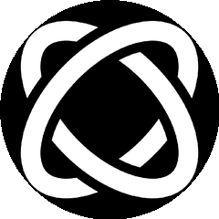

AI · 干活工具集
6
个 AI 替你干
不想碰的活
不想碰的活
白帽 · 框架 · 数据 · 剪片
| 00| 25| 50| 75| 99
#01
AI 白帽 · 渗透测试
AI 帮你查安全漏洞
usestrix / strix

开源 AI 渗透工具
自动扫描应用 · 普通人也能做安全体检
自动扫描应用 · 普通人也能做安全体检
32,101 ★
总星标 · 今日 +2,167
Python
AI 白帽
漏洞扫描
三万星项目，让 AI 当白帽帮你查漏洞
#02
Agent 方法论 · 开发框架
真跑得通的 Agent 框架
obra / superpowers

技能 + 记忆全打包
实战检验的智能体开发方法论
实战检验的智能体开发方法论
244,368 ★
总星标 · 今日 +962
Shell
技能+记忆
实战框架
24 万星验证的不是玩具，是真跑得通的 Agent 方法论
#03
健身数据集 · 结构化
433 动作配动图
hasaneyldrm / exercises-dataset

动作名 / 肌群 / 器械 / 要领
全结构化数据 · 健身应用直接拿来用
全结构化数据 · 健身应用直接拿来用
433 动作
9,234 ★ · 今日 +942
HTML
配动图
健身弹药库
做健身应用的现成弹药库，省掉自己爬数据
#04
AI 剪辑 · 命令行
AI 帮你剪视频
browser-use / video-use

写几行自然语言就能让 AI 完成剪辑
不用碰剪辑软件
不用碰剪辑软件
13,755 ★
总星标 · 今日 +550
Python
自然语言驱动
browser-use 团队
browser-use 团队新作，命令行写几句话 AI 帮你剪片
100m80m60m40m20m
#05
编程 Agent · 三件套增强
给 AI 助手加 buff
affaan-m / ECC

技能 + 记忆 + 安全 三件套
给编程 agent 装上 · 跑得更稳不跑偏
给编程 agent 装上 · 跑得更稳不跑偏
225,159 ★
总星标 · 今日 +508
JavaScript
技能+记忆+安全
22 万星
给一堆 AI 编程助手装上三件套，跑得更稳
#06
AI 求职 · 14 模式系统
AI 帮你跑求职
santifer / career-ops

投简历 / 准备面试 / 批量处理
14 模式覆盖找工作每个环节
14 模式覆盖找工作每个环节
57,772 ★
总星标 · 今日 +322
JavaScript
14 模式
求职全流程
找工作每个环节都能交出去，AI 替你跑
这 6 个
你想用哪个？
你想用哪个？
strix
superpowers
exercises
video-use
ECC
career-ops
评论区聊聊